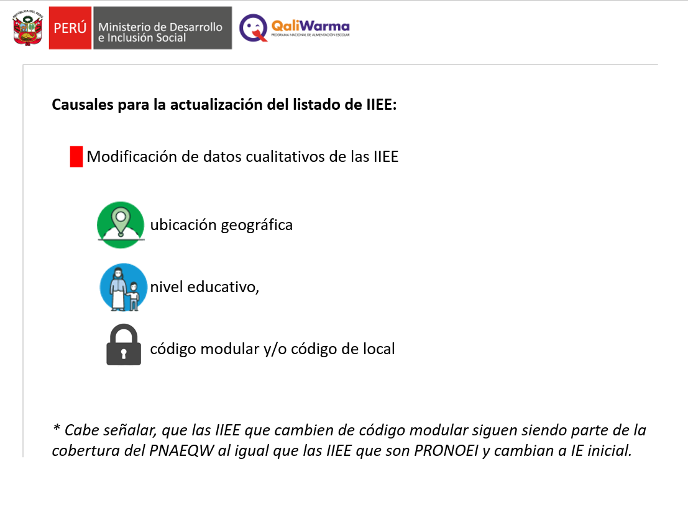

Inicio
Normatividad
Formatos
Herramientas
Formularios
Videos
Links
VIDEOS
Protocolos 2021
 Procedimiento de actualización del listado de IIEE - 2021
Procedimiento de actualización del listado de IIEE - 2021
Protocolo de veeduría y atención de alertas - 2021
Verificación de la distribución de los alimentos - 2021
Evaluación Técnica de Establecimientos - 2021
Saneamiento ambiental 2021
Asistencia técnica respecto a las actividades de saneamiento ambiental SPA
Asistencia Técnica respecto a las actividades de saneamiento ambiental DIRESA